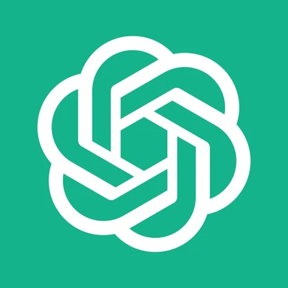
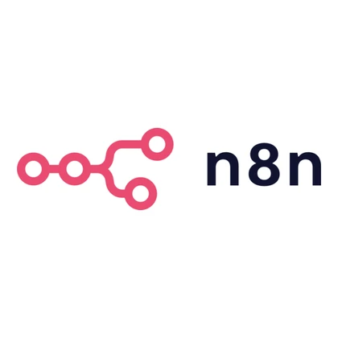
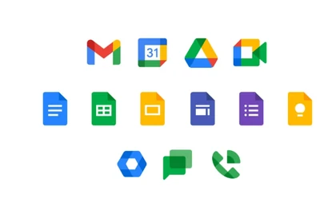
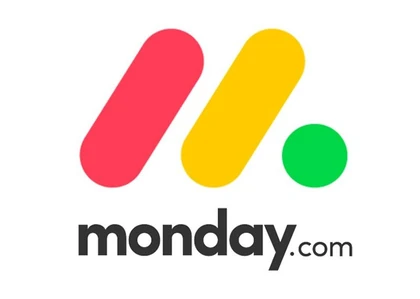
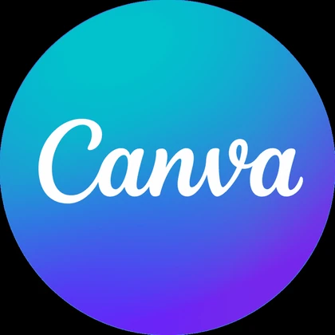

Best for independent teams with multiple crews, service areas, recurring work, or steady residential and commercial quote requests.
Cleaning Lead Follow-Up Automation
Respond to cleaning quote requests faster. Follow up until they book.
I help cleaning companies connect quote forms, inboxes, CRM or Sheets, email follow-ups, owner alerts, and booking steps into one tested workflow. Removals companies are my secondary fit.
Quote response
Follow-up automation
CRM / Sheets handoff
Bookings & reminders
Tested workflows · Clear documentation · Loom walkthroughs · Async-friendly PHT / UTC+8 support

Yuki CorderoAutomation & Tech Virtual Assistant
Who I help
Built for cleaning companies with growing enquiry volume and follow-up that still depends on manual checking.
Cleaning Quote Automation · Lead Follow-Up · CRM & Booking Handoff
Useful when new requests arrive through forms or inboxes but acknowledgement, qualification, reminders, and booking updates still need manual checking.
Removal companies can use the same approach to turn enquiry details into a structured move brief and a clearer quote follow-up process.
About
Practical AI automation with an operations mindset.
I’m Yuki Cordero, an AI Automation and Tech Virtual Assistant focused on quote response and lead follow-up systems for cleaning companies, with removals businesses as a secondary fit. I combine workflow thinking, automation tools, CRM support, and lightweight web/data skills to help owners reduce manual checking and keep every enquiry visible.
Focus
I specialize in cleaning-company quote response and follow-up workflows: capturing enquiries, organizing lead details, triggering timely replies, and keeping each opportunity visible until it is booked or closed.
Background
With a Computer Engineering foundation, digital marketing support experience, and operations coordination exposure, I turn manual steps into repeatable workflows with testing, notes, and clear handoff.
Handoff
You can expect async-friendly communication, careful testing, organized documentation, and practical systems that are easier to understand after delivery.

Quick facts
- Hands-on builds
- 3 practical systems completed
- English
- Professional working proficiency
- Languages
- English, Filipino
- Work style
- Async-first · flexible real-time support
Services
Less chasing.
Clearer next steps.
Practical automation for cleaning companies. Keep quote requests, follow-ups, and booking details connected, so your team knows who needs attention.
The core workflow
Give every quote request
a clear next step.
Connect your enquiry form or inbox to a follow-up system that acknowledges new requests, keeps details in one place, and flags the next action.
- Lead capture into your CRM or Google Sheets
- Email replies and follow-ups based on lead status
- Owner alerts and a clear booking handoff
30-minute call · Bring your current process
- A quote request comes in
Capture contact and cleaning details.
- The customer gets a reply
Acknowledge the request and ask for missing details.
- Follow-up stays on track
Use lead status to guide reminders and owner alerts.
- Your team knows what’s next
Move the lead to booked, closed, or manual review.
Built around your tools and agreed follow-up rules.
Support for the rest of your workflow.
Start with one bottleneck. Add what you need.
Know where every lead stands.
CRM & pipeline support that turns scattered contacts and notes into a shared view of each enquiry.
- Clear lead stages and contact records
- Next-action tasks and owner assignments
See what needs attention.
Simple trackers & dashboards that make open quotes, pending follow-ups, and daily tasks easier to check.
- Lead and task tracking in one place
- Useful status views and reporting summaries
Keep the enquiry path working.
Website & tech updates that keep service information, contact links, and quote forms ready for customers.
- Practical page and content updates
- Form checks and connected-tool fixes
A system you can understand.
Automation builds include scenario testing, step-by-step notes, and a Loom walkthrough for a clear handoff.
Tools
Tools I work in.
A focused stack for automation, CRM support, web updates, documentation, and day-to-day business operations.
AIContent, logic, and workflow assistance

ChatGPTClaude
AutomationLead routing, follow-ups, and system triggers

n8nZapier
Make
CRM / OperationsPipeline cleanup, tracking, and team visibility
GoHighLevel

Google Workspace
Monday.comWeb / Build / DesignWebsite updates, files, versioning, and assets
WordPress
VS Code
GitHub

CanvaProcess
How we’ll work.
A clear four-step build method that turns a messy workflow into a tested system with handoff notes you can actually use.
Audit
I review your current workflow, tools, lead sources, and repetitive tasks to identify what should be automated or organized first.
You receive: a workflow map, priority list, or recommended next-step plan.
Build
I set up the workflow, tracker, CRM update, website change, or automation based on the agreed goal.
You receive: the first working version of the workflow, tracker, CRM update, or system.
Test
I check whether the system handles missing details, routes information correctly, and produces the right output.
You receive: checked scenarios, fixes, and notes on what was tested before handoff.
Document
I provide updates, notes, and simple instructions so you understand how the system works after handoff.
You receive: handoff notes, a usage guide, or Loom walkthrough when helpful.
Projects
Practical builds for messy workflows.
Explore practical builds that show how I turn messy manual processes into organized systems: lead routing, follow-up automation, CRM actions, tracking dashboards, POS workflows, and handoff documentation.
Project 01 · Multi-tenant automation
AI Front Desk & Follow-Up System for Service Businesses
A resellable, multi-tenant “AI receptionist” built in n8n: one webhook and one shared Airtable base serve many client businesses. It captures leads, replies and qualifies them with AI in seconds, books appointments, sends reminders, chases no-shows, reactivates past clients, and emails staff a daily digest.
AI Front Desk — Multi-Tenant n8n System
One webhook and one shared database serve many client businesses.
client_id loads each client’s config
01 Lead intake
Website form / chat widget
Any client site, tagged with client_id.
One shared entry point
Webhook
POST /lead-intake
02 Qualify & reply
AI Agent · Groq LLM
Approved facts only · Structured JSON
Qualify the inquiry, score Hot / Warm / Cold, and reply.
Conditional human handoff
Escalate to staff email
Medical questions, complaints, or “talk to a human”.
03 Shared source of truth
Airtable · Leads + Clients
Clients
Each business’s configuration feeds the AI agent.
Leads
Shared lead records and lifecycle status.
New → Nurturing → Booked → Won
04 Scheduled lifecycle workflows
Six jobs read and write the shared Airtable base.
Unbooked Follow-Up
Daily · Four-stage nurture.
Automatically stops on booking.Booking Capture
A Google Calendar event updates the lead to Booked.
Appointment Reminders
Hourly · 24h and 2h reminder flags prevent duplicate sends.
Post-Visit / No-Show
A review request after the visit, or a friendly rebooking follow-up.
Reactivation
Weekly win-back for clients who have lapsed 56+ days.
Staff Daily Digest
7:30 per-client summary.
Skips days with zero activity.
New inquiry → waits in an inbox → slow manual reply → follow-up depends on memory → booking lost to a faster competitor
Inquiry → AI replies & qualifies in seconds → logged to Airtable → reminders, nurture, reactivation, and a staff digest run on autopilot
7cooperating workflows
1shared lead database
24/7AI reply & qualify
Multitenant · one build, many clients
- Project type
- Self-initiated multi-tenant build
- Architecture
- One webhook · client_id-driven config
- Tools used
- n8n · Airtable · Groq LLM · Gmail · Google Calendar
- Lifecycle
- New · Nurturing · Booked · Won · Reactivated
Problem
Service businesses like med spas, clinics, and salons lose bookings when inquiries pile up in an inbox: replies are slow, follow-up depends on memory, and no-shows and past clients are rarely chased. Doing this well for several businesses usually means rebuilding the same automation over and over.
Build
I built a multi-tenant n8n system where a single webhook accepts leads from any client’s form or chat widget. An AI agent (Groq) answers using only that client’s approved facts, scores the lead Hot/Warm/Cold, and pushes toward booking — escalating medical questions or complaints to staff instead of guessing. Everything is stored in one shared Airtable base, and six scheduled workflows handle the rest of the lifecycle: nurture, booking capture, reminders, post-visit and no-show, reactivation, and a staff daily digest.
Tools
n8n · Airtable (Leads + Clients tables) · Groq LLM (llama-3.3-70b) · Gmail · Google Calendar
Outcome
One build serves many businesses: onboarding a new client is just adding a row to the Clients table — no workflow edits. The AI stays on approved facts and escalates edge cases, so responses are fast without being risky, and the whole system is documented with sanitized workflow exports for reuse.
Use case
For clinics, salons, and service teams, this keeps every inquiry answered in seconds, follow-up consistent, and staff informed each morning — the kind of system that can be packaged and resold to multiple businesses.
What this proves
This demonstrates my ability to design a production-shaped, multi-tenant automation — AI qualification with guardrails, a shared data model, and seven cooperating workflows — plus the documentation and sanitized exports that make it reusable and easy to hand off.
Project 02 · Portfolio simulation
Smart Appointment Setter for Cleaning Leads
A portfolio simulation showing how one cleaning inquiry can be routed into the right lead path, follow-up email, tracking update, CRM action, and calendar booking when schedule details are complete.
Smart Appointment Setter — Cleaning Lead Automation
From cleaning inquiry to qualified follow-up, CRM tracking, and conditional appointment booking.
01 Lead intake
New Cleaning Inquiry
- Webhook Trigger
- Format Lead Details
Normalize contact, service, and schedule details.
02 Smart qualification
Lead Scoring
Rule-based qualification
Route by Lead ScoreOne matching lead category
03 Lead routing
04 Automated actions
-
Hot leadBooking EmailSheets lead trackingFollow-up taskOwner notification
-
Warm leadQualifying EmailSheets lead trackingFollow-up taskOwner notification
-
Cold leadNurture EmailSheets lead trackingFollow-up taskNo owner notification
-
Manual reviewAcknowledgment
& Staff ReviewSheets lead trackingFollow-up taskOwner notification
Each route independently triggers personalized email follow-up, Google Sheets lead tracking, and follow-up tasks. Owner notifications run where configured.
Separate branches from the formatted & scored lead Independent of the email route
Pipeline tracking
CRM Pipeline Updates
Append a CRM Pipeline row in Google Sheets.
05 Conditional appointment booking
Check If Schedule
Is Bookable
Is Bookable
Required scheduling details are complete and parseable.
Yes
Google CalendarCreate Google
Calendar Event
Calendar Event
No No calendar event is created. Lead routing and tracking still run.
Form submission → manual checking → delayed reply → spreadsheet update → forgotten follow-up
Form submission → lead scored → email sent → tracker updated → CRM task created → calendar booked if valid
4lead paths
10+workflow actions
1 wkbuild duration
n8nautomation core
- Client type
- Portfolio simulation · cleaning business
- Duration
- 1 week
- Tools used
- n8n · Google Sheets · Gmail · CRM · Google Calendar
- Lead paths
- Hot · Warm · Cold · Manual Review
Problem
Cleaning businesses can miss bookings when inquiries are handled manually across lead details, urgency checks, replies, trackers, and follow-up reminders.
Build
I built an n8n workflow that captures new leads, formats the submission, scores each inquiry, sends the correct follow-up, notifies the owner, updates Google Sheets, creates CRM tasks, and books a Google Calendar event when a valid schedule is provided.
Tools
n8n · Google Sheets · Gmail · CRM task flow · Google Calendar
Outcome
The workflow demonstrates four qualification paths and connects 10+ actions that help reduce manual steps for qualifying, following up with, tracking, and scheduling cleaning leads.
Use case
For service businesses, this kind of setup can keep new inquiries visible, trigger faster responses, and support clearer follow-up ownership.
What this proves
This demonstrates my ability to translate a messy lead-handling process into a tested automation with routing logic, notifications, CRM tasks, and clear documentation.

Project 03 · Family business system
Custom POS System for Orders, Inventory, Sales, and Employee Time Tracking
Problem
Manual tracking made it harder to review orders, payments, stock, sales reports, and employee time records in one place.
Build
I built a custom Dream Coffee POS system with order taking, cart checkout, payment tracking, inventory updates, low-stock alerts, sales reports, employee time logs, salary tracking, menu management, and CSV export.
Tools
React · Vite · Firebase · Firestore · CSV export
Outcome
This family business system combines six core functions into one internal tool, making daily orders, stock, payments, reports, and time records easier to review.
Why it matters for Tech VA support
The project shows the operations skills behind strong Tech VA work: understanding a real workflow, structuring data, maintaining records, and turning scattered tracking into a usable system.
What this proves
This demonstrates my ability to build practical internal tools that organize day-to-day operations, reporting, inventory, and team time records in one place.
Portfolio Build Highlights
What the projects demonstrate.
Concrete outputs that show automation logic, workflow structure, internal tools, tracking, and reporting capability.
Multi-tenant AI front desk, AI lead automation, and an operations POS system
Hot, Warm, Cold, Manual Review
Order, Cart, Time, Report, Stock, Menu
Cash, GCash, bank transfer, card, others
Lead scoring, email follow-ups, sheet updates, CRM updates, task creation, and calendar booking.
Sales report and employee time logs
Testimonials
In their words.
The POS system helped us organize orders, sales, inventory, and employee time records in one place instead of tracking everything manually.
 DevieSales Staff, Dream Coffee POS User
DevieSales Staff, Dream Coffee POS User
Rate
Cleaning Lead Automation & Tech Support
Starting from $10/ hour
Best for cleaning companies that want faster quote responses, consistent follow-up, cleaner lead tracking, and a documented workflow their team can actually use.
Review My Quote WorkflowPackage examples
Includes
- n8n workflow setup
- Lead capture and follow-up automation
- Google Sheets automation and trackers
- Email follow-up workflows
- CRM / pipeline cleanup and updates
- Basic appointment-setting systems
- Simple dashboard or operations tracker setup
- Testing, troubleshooting, documentation, and Loom walkthroughs
Tested before handoff
Documentation included
Loom walkthroughs available
Async-first communication
Flexible PHT / UTC+8 support
Small-business focused
Project-based automation builds available after scope review.
Why Work With Me
Practical systems, clear handoff, reliable support.
Practical build experience
I built a multi-tenant AI front desk, an AI appointment-setter simulation, and a custom POS system that demonstrate workflow logic, AI guardrails, operations tracking, and internal tool setup.
Small business focus
I focus on useful, low-friction systems that make leads, tasks, and daily operations easier for owners and small teams to review.
Automation + admin
I can support both automation setup and admin-tech work: CRM updates, testing, tracker maintenance, web edits, and documentation.
Clear remote handoff
I provide practical remote support with async-friendly communication, organized notes, careful testing, and Loom walkthroughs when useful.
FAQ
Questions clients usually ask.
Quick answers before you book a workflow review.
Can you work with my existing tools?
Yes. I can review your current forms, inbox, CRM, spreadsheets, automations, and website tools, then suggest the simplest improvement path.
Do you build from scratch or improve current workflows?
Both. I can clean up an existing workflow or build a new one from a clear process brief.
Can you document the automation after setup?
Yes. Documentation, workflow notes, testing checks, and Loom walkthroughs can be included so the system is easier to maintain.
Can you work asynchronously?
Yes. My default style is async-first, with flexible real-time support when needed for reviews, testing, or handoff.
Do you offer project-based builds?
Yes. Project-based automation builds are available after scope review, especially for lead follow-up workflows, CRM updates, trackers, and small internal tools.
Contact
Let’s review your workflow.
If cleaning quote requests are waiting in an inbox, being copied by hand, or receiving inconsistent follow-up, book a review and we’ll identify the highest-impact step to organize or automate first.
For a useful first call, think about:
- What workflow do you want to improve?
- What tools do you currently use?
- Where are leads coming from?
- What happens after a lead submits a form?
Tested workflows
Documentation included
Async-first support
Emailhello.yukicordero@gmail.com
Quote Workflow ReviewBook a 30-minute call
LinkedInYuki Cordero
Working hoursMon–Fri · flexible hours